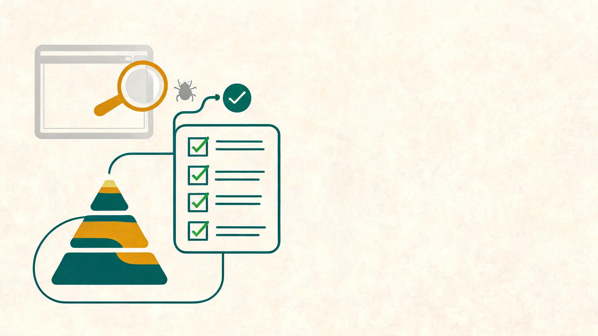
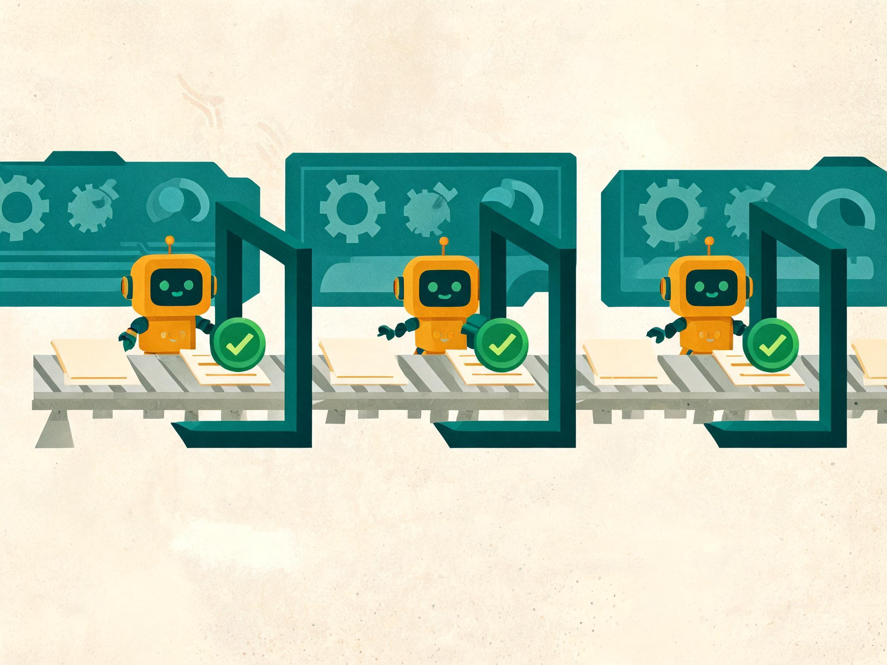
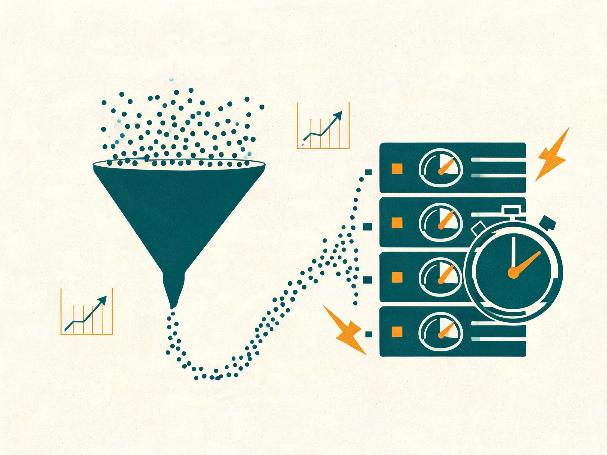

软件测试全流程
从基础到 AI 测试
一份可以直接用于学习与工作的完整手册：把测试从“点点点”还原为一套可复用的工程方法—— 从测试思维、流程、用例设计，到自动化、性能、安全，再到 AI 辅助测试与 AI 系统评测。

导读：一张图看懂你要学什么
软件测试的难点从来不是“发现一个 bug”，而是在有限的时间和资源下，持续、稳定、可解释地给出质量结论。 这份手册按“认知 → 流程 → 方法 → 工程化 → 智能化”的顺序组织，你可以把它当成一条完整的学习路径。
建立测试认知
理解测试的目的、原则、思维方式和常见误区，知道测试在研发体系中的位置。
掌握流程与方法
能把一个需求从评审一路推进到上线：计划、设计、执行、缺陷、报告、复盘。
走向工程化
用自动化、接口测试、性能与安全测试，把重复劳动交给机器，把判断留给人。
AI 辅助测试
用大模型生成用例、脚本、数据与分析结论，同时保持人工校验与可追溯。
测试 AI 系统
掌握大模型应用、RAG、Agent 的评测方法：数据集、指标、裁判模型与红队。
形成质量体系
用度量、门禁、左移右移，把个人能力升级为团队可控的质量机制。
谁适合读这份手册
- 零基础转行者：按第 1～5 章建立完整概念，配合第 10 章的 90 天路线练习。
- 1～3 年测试工程师：重点补第 4、6、7、8 章，把“会测”升级为“会设计、会工程化”。
- 开发 / 产品 / 项目经理：读第 2、5、8 章，理解测试的输入输出与质量门禁，减少协作摩擦。
- 想切入 AI 测试的人：直接读第 9 章，那里有 AI 辅助测试与 AI 系统评测两套方法论。
每章末尾都有一句“本章要带走的一句话”。先记住这句话，再看细节；动手时回到对应模板，照着重写一遍，比读三遍更有用。
认识软件测试：它到底在解决什么问题
测试不是“证明软件没有问题”，而是用有限的样本，尽可能早、尽可能准地暴露风险，并为发布决策提供证据。 理解这一点，你才会明白为什么测试策略、优先级和风险分析比“多写几条用例”更重要。
1.1 测试的定义与三个层次
国际软件测试认证委员会（ISTQB）把测试定义为：评估产品质量并降低软件在运行中失败风险的一系列活动。 这句话里有两个关键词——评估质量和降低风险。落到日常工作中，测试至少有三层目标：
| 层次 | 核心问题 | 典型动作 | 产出 |
|---|---|---|---|
| 找缺陷 | 系统在哪里与预期不符？ | 执行用例、探索式测试、对比实际与预期 | 缺陷单、复现步骤、日志证据 |
| 验证需求 | 做出来的东西是不是用户真正要的？ | 需求追踪、验收标准核对、场景走查 | 需求覆盖率、验收结论 |
| 建立信心 | 这次能不能发？风险有多大？ | 质量评估、风险清单、发布门禁 | 测试报告、Go / No-Go 建议 |
很多新人只停在第 1 层，于是工作变成“找 bug 的数量竞赛”；而真正资深的测试工程师，价值主要体现在第 2、3 层—— 把质量翻译成决策者能理解的风险语言。
1.2 测试、调试、质量保证，别混在一起
| 概念 | 关注对象 | 主要手段 | 一句话区分 |
|---|---|---|---|
| 测试（Testing） | 产品 / 系统的表现 | 设计用例、执行、对比预期 | 发现问题 |
| 调试（Debugging） | 代码内部的错误原因 | 断点、日志、二分定位 | 定位并修复问题 |
| 质量保证（QA） | 研发过程本身 | 流程规范、评审、度量、改进 | 预防问题产生 |
| 质量控制（QC） | 产品结果 | 测试、检查、验收 | 拦截问题流出 |
测试属于 QC 的一部分，而 QA 的范围更大。一个团队如果只有“测试”没有“QA”，通常表现为：缺陷反复出现、同类问题在不同模块复制、流程靠人盯。
1.3 七条基本原则（每条都对应一个实践）
- 测试能证明缺陷存在，不能证明缺陷不存在。所以别追求“零缺陷”的口号，要追求“风险可接受”。
- 穷尽测试是不可能的。因此必须做优先级和风险取舍，而不是无脑堆用例。
- 测试尽早介入。需求评审阶段发现的一个歧义，比上线后的一次事故便宜几个数量级。
- 缺陷具有集群性。约 80% 的缺陷集中在约 20% 的模块，复杂模块要投入更多测试。
- 杀虫剂悖论。同一批用例反复执行会逐渐失效，需要定期更新与补充探索式测试。
- 测试依赖于上下文。电商大促和医疗设备的质量标准不可能一样，策略必须因项目而异。
- 无缺陷谬误。即使一个缺陷都没有，系统也可能因为不满足用户需求而失败。
“测试就是点点点”“测试谁都能做”“自动化能替代手工”“覆盖率 100% 就没有 bug”“测试是开发的对手”。 这些说法共同的问题是：把测试当成动作，而不是决策与工程。
1.4 测试思维：四个提问方向
面对任何一个功能，都可以用下面四个方向快速展开思考。以“用户登录”为例：
逆向思维
如果我是恶意用户 / 网络很差 / 数据库挂了，会发生什么？密码错误 100 次会锁号吗？重复点击登录会生成两个会话吗？
边界思维
长度的最小值、最大值、最大值 +1；密码 7 位、8 位、20 位、21 位；验证码 59 秒、60 秒、61 秒。
用户视角
真实用户不会按你的步骤走。他会刷新、会后退、会开两个标签页、会复制粘贴、会在弱网下操作。
风险思维
哪个环节出错损失最大？支付、权限、数据删除永远是高风险区，要优先覆盖、重点覆盖。
1.5 测试工程师的能力模型
| 维度 | 具体能力 | 如何练习 |
|---|---|---|
| 业务理解 | 懂业务流程、规则、异常路径、角色权限 | 画业务流程图，给新人讲一遍 |
| 技术功底 | 网络、数据库、Linux、接口、抓包、日志 | 每周定位一个真实问题的根因 |
| 测试设计 | 等价类、边界、场景、组合、风险建模 | 对同一功能用 3 种方法各设计一遍 |
| 工程化 | 自动化框架、CI/CD、监控、数据构造 | 把一个手工回归集改造成脚本 |
| 沟通表达 | 缺陷描述、风险汇报、跨角色协作 | 用“事实 + 影响 + 建议”三段式写总结 |
测试的核心产出不是缺陷数量，而是关于质量的可信信息；测试思维的本质，是结构化地怀疑。
测试全流程拆解：从需求到复盘的八个阶段
不管团队用瀑布、敏捷还是 DevOps，测试工作的内核是一致的： 理解需求 → 制定策略 → 设计验证 → 准备环境 → 执行 → 跟踪缺陷 → 汇报结论 → 沉淀改进。 差别只在于每个阶段的时长、频率和协作方式。
flowchart LR
A["需求分析"] --> B["测试计划"] --> C["测试设计"] --> D["环境准备"]
flowchart LR
E["测试执行"] --> F["缺陷管理"] --> G["测试报告"] --> H["复盘改进"]
2.1 阶段一：需求分析——测试真正的起点
很多团队的测试是从“拿到提测包”开始的，这已经晚了。需求阶段测试要做三件事：
- 参与需求评审：重点不是听懂功能，而是找出歧义、遗漏和不可测试的地方。
- 做可测性分析：这个需求能否被观察、被构造、被验证？需要哪些日志、开关、测试接口？
- 输出测试需求清单：把业务需求拆成可验证的测试点，并建立需求追踪关系。
需求评审时最值得问的 7 个问题
- 这个功能的成功标准是什么？用一句话说清楚。
- 异常和失败路径怎么处理？超时、重试、回滚、并发冲突呢？
- 权限如何划分？不同角色的可见范围和数据范围是什么？
- 边界在哪里？数量、金额、长度、频率、时间窗口的上限是什么？
- 与现有功能的交互影响是什么？会不会破坏旧逻辑？
- 数据从哪里来、到哪里去？是否需要迁移、兼容历史数据？
- 如何验证？有没有可观测的日志、状态、事件或接口？
如果开发不提供测试入口，测试就只能“隔着 UI 猜”。在评审阶段就应争取：测试数据构造接口、状态查询接口、功能开关、关键链路 trace id、可回滚的灰度能力。这属于测试左移最有价值的部分。
2.2 阶段二：测试计划——先定策略，再定工作
测试计划不是写给领导看的文档，而是团队对“测什么、不测什么、怎么测、什么时候测完”的共识。一个实用的计划至少包含：
| 要素 | 要回答的问题 | 示例 |
|---|---|---|
| 测试范围 | 哪些功能在范围内，哪些明确不做 | 覆盖订单创建/支付/退款；不覆盖历史数据迁移 |
| 测试策略 | 各层级如何配比，手工与自动化如何分工 | 接口自动化为主，UI 仅覆盖核心链路 |
| 测试类型 | 功能、性能、安全、兼容、易用性分别做多少 | 功能全量，性能做基准 + 峰值，安全做越权与注入 |
| 资源与分工 | 谁负责什么，需要哪些环境与工具 | 2 人功能、1 人自动化、1 套预发环境 |
| 进度与里程碑 | 提测时间、冒烟时间、回归窗口、上线时间 | T-3 提测，T-1 完成回归，T 日发布 |
| 准入准出 | 什么条件才能开始测、什么条件才能上线 | 冒烟通过率 100%；P0/P1 缺陷清零 |
| 风险与应对 | 最大的不确定性是什么，如何兜底 | 第三方支付沙箱不稳定 → 准备 mock 通道 |
2.3 阶段三：测试设计——把需求变成可执行的验证
设计阶段的核心产物是测试用例集和测试数据方案。好的设计不是“每个输入框写 10 条”，而是用方法覆盖等价类、边界、组合与业务路径。 详细方法见第 4 章。这里先记住三条设计原则：
- 先场景后字段：先保证主流程和关键分支被覆盖，再补字段级校验。
- 先风险后数量：高风险模块多用组合方法，低风险模块用冒烟覆盖。
- 可判定：每条用例的预期结果必须能被客观判断，避免“界面正常”这种描述。
2.4 阶段四：环境与数据准备
环境问题通常占据测试时间的 20%～40%，但很少被正式管理。建议至少做到：
环境分层
开发环境用于自测；测试环境用于功能与集成；预发 / Staging 与生产同构，用于回归与验收；生产用于灰度与线上验证。层级越靠后，越要接近真实。
数据准备
准备可复用的基础数据集 + 每次执行动态生成的业务数据。避免“共用一条订单”导致互相干扰；涉及个人信息时必须脱敏。
配置一致性
配置项、依赖版本、第三方 mock、时钟与时区、灰度开关都要纳入版本管理，否则“我这儿是好的”会反复发生。
环境检查清单
服务是否全部启动、数据库版本是否正确、消息队列是否连通、证书是否过期、测试账号是否可用。执行前 5 分钟过一遍，能省下半天。
2.5 阶段五：测试执行——冒烟、系统、回归
- 冒烟测试（Smoke）提测后第一件事，验证核心链路是否可用。冒烟不通过直接打回，不进入详细测试，避免在不可用的版本上浪费时间。
- 系统测试（System）按用例集完整执行，覆盖功能、异常、权限、兼容等。边执行边记录，发现缺陷及时提交。
- 回归测试（Regression）修复后验证缺陷，并确认修改没有引入新问题。回归范围 = 缺陷影响面 + 核心链路 + 高风险模块。
- 探索式测试（Exploratory）不依赖预设用例，基于对系统的理解即时设计并执行。适合补充脚本覆盖不到的交互与异常组合。
“只跑用例不看现象”——用例通过了但体验很差；“缺陷描述不清”——开发无法复现导致来回拉扯； “回归只回归修的那一条”——忽略了关联影响。执行阶段的价值在于观察力，而不是打勾。
2.6 阶段六：缺陷管理
缺陷是测试过程最重要的“数据资产”，详见第 5 章。这里强调一个流程要点：缺陷必须闭环——提交、确认、修复、验证、关闭，每一步都有责任人和状态。
2.7 阶段七：测试报告与发布决策
测试报告不是流水账，而是质量结论。推荐结构：
- 结论先行：是否建议发布，附带前提条件。
- 范围与执行情况：计划多少、执行多少、通过率、未执行原因。
- 缺陷分析：按严重程度、模块、类型分布，剩余风险。
- 风险清单：尚未验证的场景、已知问题、外部依赖风险。
- 建议：发布 / 灰度 / 延期，以及需要的监控与回滚方案。
2.8 阶段八：复盘与资产沉淀
每个版本结束后，用 30 分钟回答四个问题：哪些缺陷本可以更早发现？哪些用例是无效的？哪些环境问题重复出现？下一版要改哪一条流程？把结论写进用例库、检查清单和自动化脚本，流程才会真正变强。
2.9 V 模型与敏捷测试流程
| 模式 | 特点 | 测试介入方式 | 适用场景 |
|---|---|---|---|
| V 模型 | 开发阶段与测试阶段一一对应，强调验证与确认 | 需求对应验收测试，设计对应集成测试，编码对应单元测试 | 需求稳定、合规要求高的项目 |
| 敏捷 / 迭代 | 小步快跑，每个 Sprint 交付可用增量 | 测试全程参与，需求澄清、用例内嵌、持续回归 | 需求变化快、互联网产品 |
| DevOps / 持续交付 | 自动化流水线，发布高频 | 测试即代码，门禁自动化，线上监控与灰度验证 | 成熟工程团队、SaaS 产品 |
流程的价值不是让你按部就班，而是让每一个质量结论都有据可查、每一个风险都有人负责。
测试分层与类型：在不同粒度上验证质量
测试不是只有“点点界面”。按粒度可以分为单元、集成、系统、验收；按关注点可以分为功能、性能、安全、兼容、易用性等。 合理的分层能在最低成本的位置拦截最多的问题。
3.1 测试金字塔：越往下越便宜，越往上越真实
冰淇淋反模式
大量依赖手工 UI 测试、缺少单元测试。表现是：回归越来越慢、维护成本越来越高、缺陷定位越来越难。
测试奖杯（Testing Trophy）
前端场景常用：以集成测试为主（占比最高），单元测试为辅，E2E 只覆盖关键链路。强调“测用户能看到的行为”。
3.2 四个测试层级
| 层级 | 测试对象 | 关注点 | 典型工具 | 执行者 |
|---|---|---|---|---|
| 单元测试 | 函数、类、组件 | 逻辑正确、分支覆盖、异常处理 | JUnit / pytest / Jest / Vitest | 开发为主 |
| 集成测试 | 模块之间、服务之间、数据库/中间件 | 接口契约、数据传递、事务、异常传播 | Pytest + requests / Testcontainers / Pact | 开发 + 测试 |
| 系统测试 | 完整系统 | 端到端业务、非功能特性 | Playwright / JMeter / 安全扫描 | 测试为主 |
| 验收测试 | 面向用户与业务 | 是否满足需求、能否上线 | UAT 环境 + 人工 / 自动化冒烟 | 产品 / 用户 / 测试 |
单元测试的 FIRST 原则
- Fast：快，毫秒级，开发者才愿意频繁运行。
- Independent：相互独立，不依赖执行顺序。
- Repeatable：任何环境、任何时间结果一致。
- Self-validating：有明确断言，不靠人看输出。
- Timely：在写实现之前或同时编写（TDD）。
覆盖率衡量的是“代码被执行过”，不是“逻辑被验证过”。一行代码被执行但没有任何断言，覆盖率是 100%，质量却可能是 0。建议关注分支覆盖 + 关键路径断言质量，而不是刷数字。
3.3 集成测试与契约测试
集成测试的重点是边界处的假设：字段类型、空值、超时、重试、幂等、事务回滚。 微服务架构下，服务之间可以通过契约测试（如 Pact）在不启动完整环境的情况下验证接口约定：
- 消费者定义“我期望的请求与响应” → 生成契约文件。
- 提供者在 CI 中验证自己是否满足契约。
- 契约变更即代码变更，破坏性修改会在流水线中暴露。
3.4 验收测试：把“做完了”变成“做对了”
验收测试的判断依据应该是验收标准，而不是测试人员的主观感觉。推荐用 Given-When-Then 描述：
# 场景：会员在满减活动中下单
Given 用户是有效会员，且账户余额充足
And 购物车金额为 199 元，活动门槛为满 200 减 30
When 用户点击“提交订单”
Then 订单金额应为 199 元（不享受满减）
And 页面提示“再买 1 元可减 30 元”
And 订单状态为“待支付”这种写法既能让产品确认理解一致，也能直接转成自动化用例。
3.5 按关注点划分的测试类型
| 类型 | 验证什么 | 关键手段 | 何时执行 |
|---|---|---|---|
| 功能测试 | 业务逻辑是否符合需求 | 用例、场景、判定表 | 每轮迭代 |
| 接口测试 | 服务契约、参数、状态码、幂等 | Postman / pytest / RestAssured | 提测前、CI 每次提交 |
| 性能测试 | 响应时间、吞吐、稳定性、容量 | JMeter / k6 / Locust | 版本后期、大促前 |
| 安全测试 | 越权、注入、敏感信息、依赖漏洞 | 手工验证 + SAST/DAST/SCA | 迭代内 + 上线前 |
| 兼容性测试 | 浏览器、系统、分辨率、机型 | 真实设备 + 云真机 | 发版前 |
| 易用性测试 | 可理解、可操作、反馈清晰 | 启发式评估、用户测试 | 设计阶段 + 灰度 |
| 无障碍测试 | 键盘可用、读屏可读、对比度足够 | axe / Lighthouse / 人工 | 前端交付前 |
| 可靠性测试 | 故障恢复、降级、长稳运行 | 混沌工程、故障注入 | 上线前 / 线上 |
把问题拦截在成本最低的层级：能用单元测试证明的逻辑，不要留给 UI 回归。
测试用例设计方法：用最少的用例覆盖最多的风险
用例设计的水平，直接决定测试效率。同样的功能，有人写 200 条仍然漏测，有人写 30 条就能覆盖 90% 的风险。 差别不在勤奋，而在于是否用结构化的方法把输入空间切开。
4.1 一条好用例长什么样
| 要素 | 说明 | 反例 |
|---|---|---|
| 唯一编号 | 可引用、可追踪，如 LOGIN-001 | “登录测试 1” |
| 标题 | 一眼看出测什么 | “测试登录功能” |
| 前置条件 | 数据、账号、状态、权限 | （空缺，执行时靠猜） |
| 操作步骤 | 可被别人原样复现 | “输入正确账号密码登录” |
| 测试数据 | 具体值，而非“合法数据” | （写“输入合法数据”） |
| 预期结果 | 可客观判定 | “登录成功”“界面正常” |
| 优先级 | P0～P3，决定回归取舍 | （全部标“高”） |
| 关联需求 | 用于覆盖率与变更影响分析 | （无） |
把用例交给一个不熟悉该功能的同事，他能不看文档、不问人，独立执行并得出与你一致的结论——这才叫合格用例。
4.2 等价类划分：把无限输入变成有限类别
等价类的核心假设是：同一类输入的处理逻辑相同，测一个代表值就能代表整类。 把输入划分为“有效等价类”和“无效等价类”，每类至少取一个值。
示例：注册年龄要求 18～60 周岁（整数）。
| 类别 | 条件 | 代表值 | 预期 |
|---|---|---|---|
| 有效等价类 | 18 ≤ 年龄 ≤ 60 | 18 / 30 / 60 | 注册成功 |
| 无效等价类 ① | 年龄 < 18 | 17 | 提示未满 18 岁 |
| 无效等价类 ② | 年龄 > 60 | 61 | 提示超出年龄范围 |
| 无效等价类 ③ | 非整数 | 30.5 | 提示格式错误 |
| 无效等价类 ④ | 非数字 / 空 | abc / 空 | 提示必填或格式错误 |
4.3 边界值分析：缺陷最爱藏在边上
绝大多数 off-by-one 错误发生在边界附近。对区间 [a, b]，至少要测 a-1、a、a+1、b-1、b、b+1；
如果时间或成本紧张，至少测 a-1、a、b、b+1（三点边界法）。
| 取值 | 输入 | 类型 | 预期 |
|---|---|---|---|
| 下边界外 | 17 | 无效 | 拒绝，提示未满 18 岁 |
| 下边界 | 18 | 有效 | 通过 |
| 下边界内 | 19 | 有效 | 通过 |
| 上边界内 | 59 | 有效 | 通过 |
| 上边界 | 60 | 有效 | 通过 |
| 上边界外 | 61 | 无效 | 拒绝，提示超出范围 |
4.4 判定表：处理复杂业务规则
当一个结果由多个条件组合决定时，判定表能把“遗漏的组合”显性化。 示例：订单折扣规则——会员且满 200 减 30；非会员满 300 减 20；其余不打折。
| 条件 / 动作 | R1 | R2 | R3 | R4 | R5 |
|---|---|---|---|---|---|
| 是否会员 | 是 | 是 | 否 | 否 | 否 |
| 订单金额 ≥ 200 | 是 | 否 | 是 | 否 | — |
| 订单金额 ≥ 300 | — | — | 是 | — | — |
| 减 30 | ✓ | ||||
| 减 20 | ✓ | ||||
| 不打折 | ✓ | ✓ | ✓ |
先列全条件组合（2ⁿ），再合并结果相同的规则，最后为每条规则设计一条用例。这样能避免“只测了会员满减，忘了非会员满减”的遗漏。
4.5 正交实验法：组合爆炸的降维工具
当有多个因子、每个因子多个水平时，全组合数量会爆炸。正交表可以用远少于全组合的用例，覆盖任意两个因子之间的所有水平组合。
示例：浏览器（Chrome / Safari / Firefox）× 操作系统（Windows / macOS / iOS）× 网络（4G / Wi-Fi / 弱网），全组合 27 条，用正交思路可压缩到约 9 条。
| # | 浏览器 | 操作系统 | 网络 |
|---|---|---|---|
| 1 | Chrome | Windows | 4G |
| 2 | Chrome | macOS | Wi-Fi |
| 3 | Chrome | iOS | 弱网 |
| 4 | Safari | Windows | Wi-Fi |
| 5 | Safari | macOS | 弱网 |
| 6 | Safari | iOS | 4G |
| 7 | Firefox | Windows | 弱网 |
| 8 | Firefox | macOS | 4G |
| 9 | Firefox | iOS | Wi-Fi |
提示：工具类库如 AllPairs、PICT 可自动生成组合；但核心链路仍建议全组合覆盖。
4.6 状态迁移法：测“流程”而不是“页面”
订单、审批、支付、账号状态这类有明确状态机的业务，用状态迁移图能快速找出非法跳转与遗漏分支。
stateDiagram-v2
[*] --> 待支付
待支付 --> 已支付: 支付成功
待支付 --> 已取消: 用户取消 / 超时
已支付 --> 已发货: 仓库发货
已发货 --> 已完成: 确认收货
已发货 --> 退款中: 申请退款
退款中 --> 已退款: 退款成功
已完成 --> 退款中: 售后退款
已退款 --> [*]
已取消 --> [*]
已完成 --> [*]
设计要点：覆盖所有合法迁移 + 验证所有非法迁移被拒绝 + 验证超时/重试/并发等边界事件。
4.7 场景法：从用户任务出发
场景法用一个完整业务故事串起多个功能点，特别适合端到端与验收测试：
- 基本流：一切顺利的主路径，如“选商品 → 下单 → 支付 → 收货”。
- 备选流：合理分支，如“库存不足 → 提示 → 更换商品”。
- 异常流：失败与中断，如“支付超时 → 订单关闭 → 优惠券退回”。
4.8 错误推测与探索式测试
基于经验、直觉和对系统的理解，列出“最可能出错”的场景。常见套路：
高频踩坑点
空值 / 空格 / 超长字符串 / emoji / 特殊字符；重复提交；并发操作；权限越权；分页边界；时区与跨天；金额精度；浮点数比较。
探索式测试（SBTM）
用“测试章程（Charter）”限定探索范围与时间盒（如 60 分钟），边学边设计边执行，并把发现记录成可复用的用例或缺陷。
4.9 方法对比与选择
| 方法 | 最适合 | 优点 | 局限 |
|---|---|---|---|
| 等价类 | 单字段输入校验 | 快速覆盖大类，成本低 | 不覆盖组合与边界 |
| 边界值 | 有明确区间/长度的输入 | 命中率高，投入产出比最好 | 只关注边界 |
| 判定表 | 多条件业务规则 | 组合完整、易评审 | 条件多时表会膨胀 |
| 正交实验 | 多因子多水平的兼容/配置 | 大幅压缩用例数 | 不保证三因子以上组合 |
| 状态迁移 | 流程、订单、审批、账号 | 覆盖状态与事件组合 | 依赖准确的状态机 |
| 场景法 | 端到端业务、验收 | 贴近真实用户，易沟通 | 粒度粗，定位慢 |
| 错误推测 | 补充经验盲区 | 发现脚本测不到的问题 | 依赖个人经验，难复制 |
4.10 完整示例：登录功能用例集（节选）
| 编号 | 场景 | 数据 | 预期 | 优先级 |
|---|---|---|---|---|
| LOGIN-01 | 正确账号密码登录 | user01 / Pass@123 | 跳转首页，显示昵称 | P0 |
| LOGIN-02 | 密码错误 1 次 | user01 / 错误密码 | 提示“账号或密码错误”，不泄露哪项错 | P0 |
| LOGIN-03 | 连续错误 5 次锁定 | 错误密码 ×5 | 第 5 次后提示锁定 15 分钟 | P1 |
| LOGIN-04 | 账号为空 | 空 / Pass@123 | 提示“请输入账号” | P1 |
| LOGIN-05 | 密码长度边界 | 7 位 / 8 位 / 20 位 / 21 位 | 7、21 位提示长度不符，8、20 位通过 | P1 |
| LOGIN-06 | 验证码过期边界 | 59s / 60s / 61s | 60s 内有效，超过提示重新获取 | P1 |
| LOGIN-07 | 重复点击登录 | 快速点击 5 次 | 只产生 1 个会话，按钮防重 | P1 |
| LOGIN-08 | 已登录用户访问登录页 | 有效会话 | 直接跳转首页或提示已登录 | P2 |
| LOGIN-09 | SQL 注入尝试 | ' OR '1'='1 | 登录失败，无 SQL 报错泄露 | P0 |
| LOGIN-10 | 弱网登录 | 限速 100kbps，丢包 10% | 有 loading，超时提示并可重试 | P2 |
用例不是越多越好，而是要用方法保证“该测的都测了”，用风险决定“先测哪个”。
缺陷管理：从发现到闭环，让每个 bug 都有价值
缺陷单是测试与开发之间最重要的“接口”。一张高质量缺陷单能节省数小时沟通； 一张糟糕的缺陷单会让问题在“无法复现”和“不是 bug”之间来回消耗。
5.1 缺陷、故障与失效
| 术语 | 含义 | 例子 |
|---|---|---|
| 缺陷（Defect / Bug） | 代码或文档中的错误 | 判断条件写成了 > 而不是 >= |
| 故障（Fault） | 缺陷在运行时的表现状态 | 库存为 0 时仍允许下单 |
| 失效（Failure） | 系统对外表现出的错误结果 | 用户成功下单但库存变负，导致超卖 |
5.2 缺陷生命周期
stateDiagram-v2
[*] --> 新建
新建 --> 已确认: 开发确认可复现
新建 --> 已拒绝: 非缺陷 / 无法复现 / 需求如此
新建 --> 已延期: 本版本不修
已确认 --> 修复中: 开发开始处理
修复中 --> 待验证: 提交修复
待验证 --> 已关闭: 验证通过
待验证 --> 重新打开: 验证失败
重新打开 --> 修复中
已拒绝 --> [*]
已延期 --> [*]
已关闭 --> [*]
“已拒绝”必须有理由和证据，不能成为开发的默认出口；“待验证”不能长期堆积，否则线上风险无法收敛。建议每周清理一次僵死缺陷。
5.3 严重程度 vs 优先级
这两个字段经常被混用。简单记：严重程度看影响，优先级看排期。严重程度由测试判定，优先级由产品/项目经理与开发共同决定。
| 级别 | 严重程度定义 | 典型例子 | 期望修复时限 |
|---|---|---|---|
| P0 / 致命 | 系统崩溃、数据丢失、资金错误、核心链路不可用 | 支付重复扣款、登录全站不可用 | 立即，阻塞发布 |
| P1 / 严重 | 主要功能失效，无绕过方案 | 下单后订单列表不显示 | 本版本必须修复 |
| P2 / 一般 | 次要功能异常，有绕过方案 | 筛选条件不生效，可手动翻页 | 本版本或下版本 |
| P3 / 轻微 | 文案、样式、体验问题 | 按钮文案错别字、间距不一致 | 可排入优化池 |
注意：严重程度低不代表优先级低。例如官网首页的错别字，严重程度是 P3，但如果明天有发布会，优先级可能是 P0。
5.4 一张合格缺陷单的要素
标题
「模块 + 条件 + 现象」，一句话说清。好的标题：「订单详情页：优惠券金额为 0 时页面白屏」。坏的标题：「下单有问题」。
环境
版本号 / 环境 / 浏览器或机型 / 账号角色 / 网络状态。缺一项就可能导致无法复现。
复现步骤
编号列出，从初始状态开始，包含具体数据。能删掉的步骤就删掉，最小复现路径最有价值。
实际 vs 预期
分开写。实际结果描述客观现象，预期结果引用需求或常识，并说明依据。
证据
截图（标注位置）、录屏、日志片段、trace id、请求响应、数据库记录。证据比形容词有说服力。
影响与频率
影响多少用户、是否阻塞、复现概率（必现 / 5 次中 3 次）。这决定优先级，而不是情绪。
缺陷描述模板
【标题】订单详情页：优惠券金额为 0 时页面白屏
【环境】v3.8.2 / 预发 / Chrome 126 / 角色：普通用户 / 账号 138****2233
【前置】账户中存在一张面额为 0 的兑换券
【步骤】
1. 登录并进入「我的优惠券」
2. 选择面额为 0 的兑换券，点击「去使用」
3. 进入商品详情并提交订单
【实际】订单详情页白屏，控制台报 TypeError: Cannot read properties of null
【预期】正常展示订单详情，优惠券抵扣 0 元，或提示该券不可用
【频率】必现（3/3） 【影响】所有持有 0 元券的用户无法下单
【证据】录屏 + trace_id 8f2c1d + 前端报错截图5.5 缺陷分析：从“修 bug”到“改系统”
缺陷数据是流程改进的原料。值得定期分析的指标：
- 缺陷密度：每千行代码或每个功能点的缺陷数，用于识别高风险模块。
- 缺陷逃逸率：上线后发现的缺陷 / 总缺陷，衡量测试有效性。
- 重开率：验证失败被重新打开的占比，反映修复质量与沟通质量。
- 平均修复时长：按严重程度分组看，而不是看平均值。
- 缺陷集群：按模块统计，验证“二八分布”是否成立，指导资源倾斜。
根因分析推荐 5 Why：连续问五次“为什么”，直到触及流程或设计层面的原因。注意区分“直接原因”（空指针）与“根本原因”（缺少空值校验规范 / 代码评审未覆盖）。
5.6 如何推动缺陷被真正修复
- 先给证据，再给结论：截图、日志、复现视频永远比“我觉得有问题”有效。
- 降低复现成本：提供最小路径、测试账号、构造好的数据，必要时当面演示。
- 对事不对人：描述系统行为，不评价开发者能力。
- 明确影响：说明会影响哪些用户、哪条链路、多大金额，让优先级有依据。
- 接受合理拒绝：如果确实是需求如此或设计取舍，就把结论回写到用例与文档，避免下次再争论。
缺陷管理的终点不是“关闭”，而是把个体问题转化为团队不再犯同类错误的机制。
自动化测试：把重复劳动交给机器
自动化的价值不是“看起来高级”，而是用可重复的执行换取更快的反馈和更低的回归成本。 但自动化有建设成本与维护成本，选错了层，反而会拖慢团队。

6.1 什么该自动化，什么不该
适合自动化
- 高频执行的回归用例
- 稳定的接口与数据校验
- 多环境、多配置的组合验证
- 性能、压力、稳定性场景
- 需要在 CI 中快速反馈的检查
不适合自动化
- 一次性验证或探索式测试
- UI 频繁改版、选择器极不稳定
- 强依赖人眼判断的视觉与体验
- 需求尚未稳定、流程还在变
- 执行一次的成本远低于维护成本
6.2 分层策略：自动化也要有金字塔
| 层级 | 占比建议 | 测什么 | 工具 | 特点 |
|---|---|---|---|---|
| 单元 | 约 70% | 函数逻辑、分支、异常 | pytest / JUnit / Jest / Vitest | 毫秒级、稳定、定位准 |
| 接口 / 集成 | 约 20% | 契约、状态码、业务链路、幂等 | pytest + requests / RestAssured / Supertest | 快、稳定、性价比最高 |
| UI / E2E | 约 10% | 核心用户旅程 | Playwright / Cypress / Selenium / Appium | 真实但慢、维护成本高 |
6.3 工具选型速查
| 场景 | 推荐工具 | 选择理由 |
|---|---|---|
| Web UI 端到端 | Playwright / Cypress / Selenium | Playwright 支持多浏览器、自动等待、并行与 trace，适合新项目 |
| 移动端 UI | Appium / Maestro / Detox | 跨平台、生态成熟；Maestro 适合快速稳定的流程测试 |
| 接口自动化 | pytest + requests / RestAssured / Supertest | 与单测同栈，易封装、易进 CI |
| 接口调试与协作 | Postman / Apifox / Bruno | 可视化、可共享、可生成文档 |
| 性能 | JMeter / k6 / Locust | JMeter 生态全；k6 脚本化、适合 CI；Locust 易扩展 |
| 报告 | Allure / ReportPortal / HTML Report | 失败分类、趋势、附件与历史对比 |
6.4 一个 Playwright 示例
// tests/login.spec.ts
import { test, expect } from '@playwright/test';
test.describe('登录', () => {
test('正确账号密码可以登录', async ({ page }) => {
await page.goto('/login');
await page.getByLabel('账号').fill('user01');
await page.getByLabel('密码').fill('Pass@123');
await page.getByRole('button', { name: '登录' }).click();
await expect(page).toHaveURL(/\/dashboard/);
await expect(page.getByTestId('user-nickname')).toHaveText('测试用户');
});
test('密码错误时提示统一文案', async ({ page }) => {
await page.goto('/login');
await page.getByLabel('账号').fill('user01');
await page.getByLabel('密码').fill('wrong-pass');
await page.getByRole('button', { name: '登录' }).click();
await expect(page.getByRole('alert'))
.toHaveText('账号或密码错误');
});
});
关键点：用语义化定位（role / label / testid）而不是脆弱的 CSS 层级；
用框架内置的自动等待，不要到处写 sleep。
6.5 让脚本可维护的六条原则
- 独立：用例之间不共享可变状态，可单独运行、任意顺序运行。
- 可重复：每次执行前自己准备数据，执行后自己清理。
- 断言明确：至少一个业务级断言，不能只判断“没有报错”。
- 分层封装：页面对象（Page Object）或服务对象（API Client）隔离定位与业务逻辑。
- 数据驱动：用例逻辑与测试数据分离，便于扩充场景。
- 快速失败：出错立即给出可读信息（请求、响应、截图、trace），减少排查时间。
6.6 不稳定用例（Flaky Tests）治理
| 现象 | 常见原因 | 处理方式 |
|---|---|---|
| 时好时坏 | 硬编码 sleep、异步未完成 | 改为显式等待某个状态或元素 |
| 单独跑通过，一起跑失败 | 数据/账号/环境互相污染 | 隔离数据、独立账号、清理前置 |
| 只在 CI 失败 | 机器性能、时区、分辨率、并发 | 固定时区、限制并发、容器化环境 |
| 改个文案就失败 | 断言了易变内容或脆弱选择器 | 断言业务语义与 testid |
| 第三方依赖抖动 | 外部服务不稳定 | Mock / 契约测试 / 重试 + 降级 |
治理策略：对 flaky 用例打标签并隔离到隔离区，设定修复时限；不要用“全局重试三次”掩盖问题， 重试只能作为兜底，不能作为解决方案。
6.7 接入 CI/CD 流水线
flowchart TB
A["提交代码"] --> B["静态检查 / SAST"]
B --> C["单元测试"]
C --> D["构建镜像"]
D --> E["接口自动化"]
E --> F["部署预发 + E2E"]
F --> G{"质量门禁"}
G -->|通过| H["灰度发布"]
G -->|失败| I["阻断并通知"]
H --> J["线上监控 / 拨测"]
- 分层触发：每次提交跑单元与接口；合并请求跑 E2E；每日跑全量回归与性能基准。
- 并行与分片：按测试文件或标签分片，缩短反馈时间。
- 失败即阻断：核心门禁失败不允许合入，非核心失败允许告警但记录。
- 结果可追溯：报告关联 commit、构建号、环境，失败可直接定位。
6.8 自动化的投入产出
自动化的真实成本 = 建设成本 + 维护成本 + 环境成本 + 失败排查成本。很多团队只算第一项，结果脚本越写越多、通过率越来越低。 建议持续跟踪通过率、平均执行时长、维护工时占比三个指标。
自动化的目标不是“覆盖率 100%”，而是让团队敢改代码、敢频繁发布。
接口与性能测试：验证系统的“骨架”能承受多少
接口是前后端之间、服务与服务之间的契约；性能是这份契约在压力下的兑现能力。 接口测试决定“对不对”，性能测试决定“扛不扛得住”。两者都比 UI 测试更早、更稳定、更便宜。
7.1 接口测试：性价比最高的一层
一个接口至少要从五个维度验证：
| 维度 | 检查内容 | 典型用例 |
|---|---|---|
| 协议与契约 | 方法、路径、Header、Content-Type、字段类型与必填 | 缺少必填字段返回 400；字段类型错误返回明确错误码 |
| 业务逻辑 | 正常流程、状态流转、金额与库存计算 | 下单后库存扣减 1，取消后库存回补 |
| 异常与边界 | 空值、超长、越界、非法枚举、重复请求 | 金额传负数；数量传 0；重复提交同一幂等键 |
| 权限与安全 | 未登录、越权、租户隔离、敏感字段 | 用户 A 的 token 查询用户 B 的订单应返回 403 |
| 性能与稳定性 | 响应时间、超时、重试、限流 | 超过 QPS 阈值返回 429；下游超时触发降级 |
接口用例示例（pytest + requests）
# tests/test_order_api.py
import pytest, requests
BASE = "https://api-staging.example.com"
def auth_headers(token):
return {"Authorization": f"Bearer {token}"}
def test_create_order_success(user_token, stock_fixture):
payload = {"sku_id": stock_fixture.sku_id, "qty": 2}
r = requests.post(f"{BASE}/v1/orders", json=payload,
headers=auth_headers(user_token), timeout=5)
assert r.status_code == 201
body = r.json()
assert body["status"] == "PENDING_PAY"
assert body["total_amount"] == stock_fixture.price * 2
def test_create_order_insufficient_stock(user_token, out_of_stock_sku):
payload = {"sku_id": out_of_stock_sku, "qty": 1}
r = requests.post(f"{BASE}/v1/orders", json=payload,
headers=auth_headers(user_token), timeout=5)
assert r.status_code == 409
assert r.json()["code"] == "STOCK_NOT_ENOUGH"
def test_idempotent_submit(user_token, stock_fixture):
payload = {"sku_id": stock_fixture.sku_id, "qty": 1}
headers = {**auth_headers(user_token), "Idempotency-Key": "req-001"}
first = requests.post(f"{BASE}/v1/orders", json=payload, headers=headers)
second = requests.post(f"{BASE}/v1/orders", json=payload, headers=headers)
assert first.status_code == second.status_code == 201
assert first.json()["order_id"] == second.json()["order_id"]注意三点：数据自建自清（fixture 负责准备与回收）、断言业务字段而不只是状态码、 幂等键复用返回同一结果。
7.2 性能测试的核心指标
为什么看 P95 / P99 而不是平均值？因为平均值会被大量快请求“稀释”。 如果 95% 的请求 200ms，5% 的请求 5 秒，平均值仍然很好看，但用户体验已经很差。
用户感知的时间参考
| 响应时间 | 用户感受 | 建议 |
|---|---|---|
| < 100 ms | 瞬时，几乎无感知 | 理想区间 |
| 100～300 ms | 流畅 | 常规接口目标 |
| 300 ms～1 s | 可接受，但能感觉到等待 | 加 loading 或骨架屏 |
| 1～3 s | 明显等待，注意力开始转移 | 必须给出进度反馈 |
| > 3 s | 容易放弃或重复提交 | 拆分请求、异步化、优化链路 |
7.3 六种性能测试场景
基准测试
单用户或低并发下测基线，作为后续对比的参照。
负载测试
逐步加压到预期峰值，验证系统在目标负载内是否达标。
压力测试
持续加压直到系统崩溃，找出极限与最先出现的瓶颈。
稳定性测试
70%～80% 负载下持续运行 8～24 小时，观察内存泄漏与性能衰减。
峰值测试
模拟秒杀、开票等瞬时突发流量，验证限流、排队与降级。
容量测试
评估数据量、连接数、并发数增长后的容量上限与扩容策略。
7.4 性能测试的完整流程
- 明确目标与指标先定义“达标”是什么：目标 TPS、P95 上限、错误率上限、资源上限。没有目标的压测只会得到一堆数字。
- 梳理业务模型找出核心链路与流量占比，按真实比例设计混合场景，而不是只压一个接口。
- 准备环境与数据压测环境尽量与生产同构；数据量要接近真实（10 万条和 1000 万条的 SQL 性能完全不同）。
- 编写与调试脚本参数化、关联、思考时间、断言都要正确，先小并发验证脚本无误。
- 执行与监控压测端、应用端、数据库端、中间件端同步采集指标，缺一不可。
- 分析瓶颈先看资源与错误率，再看链路耗时，最后定位到具体 SQL、锁、GC 或外部依赖。
- 调优与回归每次只改一个变量，改完重压对比，避免“感觉快了”。

7.5 常见瓶颈与排查顺序
| 层 | 典型症状 | 排查手段 |
|---|---|---|
| 压力端 | 压测机 CPU 打满、网络带宽不足 | 分布式压测、监控压测机资源 |
| 接入层 | 连接数打满、TIME_WAIT 过多 | 连接池、keep-alive、限流、负载均衡 |
| 应用层 | CPU 高、线程阻塞、频繁 Full GC | 火焰图、线程栈、GC 日志、异步化 |
| 缓存 | 命中率低、缓存击穿 | 缓存命中率监控、热点 key、互斥重建 |
| 数据库 | 慢 SQL、锁等待、连接池耗尽 | 慢查询日志、执行计划、索引、读写分离 |
| 外部依赖 | 第三方接口超时拖垮整体 | 超时控制、熔断降级、异步补偿 |
排查口诀：先看错误率 → 再看资源 → 再看单接口耗时 → 最后看链路与依赖。不要一上来就猜代码。
① 只压单接口，不看混合场景；② 数据量太小，掩盖了索引与分页问题； ③ 压测环境与生产差距过大，结论无法外推。性能结论一定要标注环境与数据规模，否则没有意义。
接口测试保证“契约正确”，性能测试保证“容量可预期”；两者共同构成了系统质量的骨架。
安全测试与质量体系：从单点检查到系统能力
安全测试的难点在于攻击面是无限的；质量体系的难点在于让人不依赖个人英雄主义也能持续交付。 这一章把两者放在一起，因为它们都需要“机制”而不是“加班”。
8.1 安全测试 vs 渗透测试
| 维度 | 安全测试 | 渗透测试 |
|---|---|---|
| 目标 | 验证已知安全控制是否生效 | 模拟真实攻击，寻找未知漏洞 |
| 执行者 | 测试 / 开发 / 安全工程师 | 专业安全团队或第三方 |
| 频率 | 每次迭代、持续进行 | 上线前、重大变更、年度 |
| 产出 | 检查结果、修复建议 | 渗透报告、风险评级 |
8.2 OWASP Top 10（2021）速览
| 风险 | 一句话解释 | 测试要点 |
|---|---|---|
| A01 访问控制失效 | 用户能访问不该访问的资源 | 水平越权（改 ID 看他人数据）、垂直越权（普通用户调管理接口） |
| A02 加密机制失效 | 敏感数据未加密或加密不当 | 传输是否 HTTPS、密码是否加盐哈希、密钥是否硬编码 |
| A03 注入 | 不可信数据被当作代码执行 | SQL / NoSQL / 命令 / 模板注入，优先测搜索、登录、导出 |
| A04 不安全设计 | 架构层面缺少威胁建模 | 业务流程绕过、风控缺失、资源无上限 |
| A05 安全配置错误 | 默认配置、调试接口、错误堆栈暴露 | 检查 Actuator、Swagger、目录列表、CORS、默认口令 |
| A06 脆弱与过时组件 | 依赖库存在已知漏洞 | SCA 扫描（Dependabot / Trivy / OWASP Dependency-Check） |
| A07 身份认证失效 | 会话、口令、验证码机制薄弱 | 暴力破解、会话固定、JWT 校验、登出失效 |
| A08 数据完整性失效 | 关键数据缺少校验与签名 | 价格、数量、权限字段是否可被前端篡改 |
| A09 日志与监控不足 | 攻击发生却无记录、无告警 | 关键操作是否留痕、日志是否含敏感信息、是否有告警 |
| A10 SSRF | 服务端被诱导访问内网地址 | 图片抓取、Webhook、文件导入等 URL 参数 |
最小安全测试清单
- 所有需要登录的接口在未登录时是否返回 401，而不是返回数据
- 替换 URL / Body 中的资源 ID，能否访问他人数据（水平越权）
- 普通账号直接调用管理端接口，是否被拒绝（垂直越权）
- 搜索、登录、导入等输入点是否抗 SQL 注入与 XSS
- 价格、数量、优惠金额等关键字段是否在服务端重新校验
- 错误响应是否泄露堆栈、SQL、内网地址、依赖版本
- 敏感信息（身份证、手机号、token）是否出现在日志与 URL 中
- 依赖组件是否存在高危 CVE，镜像是否扫描
- 上传文件的类型、大小、内容、存储路径是否受限
- 接口是否有频率限制，验证码是否可被绕过或复用
8.3 测试左移：把质量往前推
flowchart LR
A["需求评审"] --> B["设计与契约"] --> C["编码与单测"] --> D["CI 门禁"] --> E["发布与灰度"] --> F["线上监控"]
左移做什么
- 需求评审时提出可测性与边界问题
- 推动单元测试与静态扫描进入 CI
- 接口契约先行，减少联调返工
- 用代码覆盖率与复杂度识别高风险模块
右移做什么
- 灰度发布与 A/B 验证
- 线上拨测、业务监控与告警
- 混沌工程与故障演练
- 用户反馈与线上缺陷回流分析
8.4 质量度量：用数据说话
| 指标 | 定义 | 看什么 | 常见陷阱 |
|---|---|---|---|
| 需求覆盖率 | 被用例覆盖的需求 / 总需求 | 是否有功能完全没测 | 覆盖了需求但没覆盖异常路径 |
| 用例执行率 | 已执行 / 计划执行 | 测试是否按计划完成 | 为达标执行无意义用例 |
| 缺陷密度 | 缺陷数 / 规模（KLOC 或功能点） | 哪个模块最脆弱 | 不同团队统计口径不一致 |
| 缺陷逃逸率 | 线上缺陷 / 总缺陷 | 测试是否有效拦截 | 线上缺陷统计不全导致虚低 |
| 缺陷重开率 | 重开缺陷 / 已修复缺陷 | 修复质量与验证充分性 | 只看数字不看原因 |
| 自动化通过率 | 通过用例 / 执行用例 | 脚本与环境健康度 | 用重试掩盖 flaky |
| 平均恢复时间 | 从故障发生到恢复的时长 | 应急响应能力 | 只统计技术耗时，忽略决策耗时 |
当一个指标变成目标，它就不再是好指标。用缺陷数考核测试，会导致重复提交与小题大做； 用覆盖率考核开发，会导致无断言的测试。指标用于发现问题，不用于排名惩罚。
8.5 发布门禁示例
| 门禁项 | 阈值示例 | 不满足时 |
|---|---|---|
| 冒烟用例通过率 | 100% | 阻断，打回提测 |
| P0 / P1 未关闭缺陷 | 0 | 阻断发布 |
| 接口自动化通过率 | ≥ 98%（不含已知 flaky） | 阻断或需质量负责人审批 |
| 单元测试新增代码覆盖率 | ≥ 70% | 告警，不阻断（按团队基线） |
| 高危依赖漏洞 | 0 | 阻断 |
| 性能基准回归 | P95 劣化 ≤ 10% | 需性能负责人确认 |
| 灰度观察期错误率 | < 0.1% 且无新增告警 | 回滚 |
阈值不是行业标准，必须根据团队历史基线校准；门禁的意义是“有共识的自动决策”，而不是“卡人”。
安全靠“默认不信任”，质量靠“机制不靠人”；门禁自动化，度量透明化，改进常态化。
AI 时代的测试：既要用 AI 测试，也要测试 AI
AI 对测试的影响是双向的：一方面，大模型可以辅助生成用例、脚本、数据和分析结论； 另一方面，AI 系统本身成了新的测试对象——它的输出是概率性的，传统“预期结果唯一”的断言方式失效了。 这一章分两部分讲清楚。
9.1 上半场：AI 赋能传统测试
| 环节 | AI 能做什么 | 人必须做什么 |
|---|---|---|
| 需求分析 | 提炼验收标准、列出异常路径、发现歧义 | 确认业务规则、判断优先级 |
| 用例设计 | 按等价类/边界/判定表批量生成用例 | 剔除幻觉用例、补充业务场景 |
| 脚本编写 | 自然语言转 Playwright / pytest，补全定位与断言 | 校验可执行性、维护封装结构 |
| 测试数据 | 生成边界值、异常组合、脱敏的合成数据 | 校验数据合法性、防止敏感信息泄露 |
| 缺陷分析 | 聚类去重、总结日志、推测根因、润色缺陷单 | 验证结论、做最终技术判断 |
| UI 验证 | 多模态识别截图差异、定位视觉回归 | 设定容差、确认是否为预期变化 |
| 探索式测试 | Agent 自主点击探索、生成异常路径 | 设定边界与安全护栏、复盘发现 |
用例生成提示词模板
你是资深测试工程师。请基于以下需求设计测试用例。
【需求】
用户可以使用手机号 + 验证码登录；验证码 6 位数字，60 秒内有效，
同一手机号 60 秒内只能发送一次，连续输错 5 次锁定 15 分钟。
【输出要求】
1. 用表格输出：编号 | 场景 | 前置条件 | 步骤 | 测试数据 | 预期结果 | 优先级
2. 覆盖：正常流、边界值、异常流、并发、安全、兼容性
3. 每条预期结果必须可客观判定，禁止使用“正常”“友好”等模糊描述
4. 单独列出你认为需求中仍有歧义、需要产品确认的点
5. 不要编造需求中没有的规则；如需假设，请显式标注【假设】提示词的关键是约束输出格式、要求可判定、强制标注假设。没有这三条，模型很容易生成“看起来对但没法执行”的用例。
flowchart TB
A["需求 / 接口文档"] --> B["LLM 生成用例 / 脚本 / 数据"]
B --> C{"人工评审：去幻觉、补业务"}
C -->|通过| D["进入用例库 / 代码库"]
C -->|不通过| B
D --> E["CI 执行"]
E --> F["失败聚类与 AI 辅助分析"]
F --> G["人工定论：缺陷 / 环境 / 脚本"]
G --> H["回写用例与规则"]
H -.-> B
9.2 AI 辅助的四个风险与治理
| 风险 | 表现 | 治理措施 |
|---|---|---|
| 幻觉 | 编造不存在的字段、接口、业务规则 | 提供权威上下文（接口文档 / 需求原文），要求标注假设，逐条人工核对 |
| 数据泄露 | 把生产数据、密钥、用户信息贴进对话 | 脱敏、使用企业私有部署、禁止上传敏感文件 |
| 不可复现 | 同一提示词两次输出差异很大 | 固定模型版本与参数、保存提示词与输出、建立回归基线 |
| 过度信任 | 直接采用生成脚本，不做校验 | 把 AI 输出当作“初稿”，必须经过评审与执行验证 |
原则：AI 可以参与生产，但不能承担最终责任；所有进入质量门禁的内容必须可追溯、可复现、可解释。
9.3 下半场：如何测试 AI 系统
传统软件是“确定性输入 → 确定性输出”，而大模型应用是“输入 → 概率分布 → 采样输出”。 这带来三个根本变化：没有唯一正确答案、质量是连续的、评测本身也需要被评测。
| 维度 | 传统测试 | AI 系统评测 |
|---|---|---|
| 预期结果 | 唯一、可精确断言 | 参考答案 + 评分标准（rubric） |
| 通过标准 | 等于 / 不等于 | 阈值 + 置信区间 + 人工抽检 |
| 用例来源 | 需求推导 | 真实用户分布 + 边界 + 对抗样本 |
| 主要风险 | 功能错误 | 幻觉、偏见、越权、提示注入、成本与延迟 |
| 回归方式 | 固定用例集 | 评测集版本化 + 统计显著性对比 |
评测指标体系
| 类别 | 指标 | 说明 |
|---|---|---|
| 正确性 | 准确率 / 通过率 | 答案与标准答案或评分标准的一致程度 |
| 忠实度 | Faithfulness / Groundedness | 回答是否完全基于提供的上下文，有无编造（RAG 核心指标） |
| 相关性 | Answer Relevance | 回答是否切题，而不是答非所问 |
| 检索质量 | Hit Rate / Context Precision / Recall | 检索到的文档是否包含答案、排序是否合理 |
| 安全性 | 违规率 / 越狱成功率 | 有害内容、隐私泄露、提示注入的成功比例 |
| 鲁棒性 | 扰动后性能下降幅度 | 错别字、换语言、加干扰后是否仍稳定 |
| 体验与成本 | 首字延迟、总耗时、token 成本 | 决定能否上线的硬约束 |
| Agent 专项 | 任务完成率 / 步骤效率 / 工具调用正确率 | 多步任务的端到端表现与失败恢复能力 |
评测方法组合
黄金数据集
由业务专家标注的“问题 + 参考答案 + 评分要点”。规模不必很大，但必须覆盖真实高频场景与高风险边界。版本化管理，每次模型或提示词变更都跑一遍。
LLM-as-a-Judge
用更强的模型按评分标准打分，适合规模化评测。必须做偏差校准：位置偏差、长度偏好、自我偏好，并用人工标注集验证裁判可靠性。
人工评审
抽样人工打分，作为裁判模型的校准基准。重点看“有用性”和“业务正确性”，这些往往无法自动判定。
红队与对抗测试
主动构造提示注入、越狱、诱导泄露、超范围指令，验证防护是否有效。这是 AI 系统上线前的必做项。
RAG 与 Agent 的专项测试
- RAG：分别评测“检索”和“生成”。检索看是否召回正确文档，生成看是否忠实于文档、是否引用正确、拒答是否合理。常见失败是“检索对了但答偏了”和“检索错了但答得很自信”。
- Agent：用任务集评测端到端完成率，同时记录步骤数、工具调用成功率、重复调用、死循环、超时与失败恢复。要专门测试工具返回异常与权限边界。
- 多轮对话：测试上下文记忆、指代消解、话题切换、用户纠正后的行为变化。
① 只看平均分，不看长尾失败（1% 的有害输出可能造成巨大风险）； ② 用同一模型既生成又裁判，导致自我偏好；③ 评测集泄露进训练数据，指标虚高。评测集要独立、要版本化、要定期换新。
9.4 落地路径：从今天开始可以做什么
- 第一周：建立基线挑一个重复度最高的环节（如接口用例生成），记录当前耗时与质量，作为对比基线。
- 第二周：小范围试点用固定提示词模板生成 20 条用例，人工评审通过率与遗漏率，形成团队规范。
- 第三周：接入流程把 AI 生成环节放进需求评审后的固定动作，输出统一格式，纳入用例库。
- 第四周：建设评测能力如果需要测试 AI 功能，先建 50～100 条黄金问题集，定义评分标准，再谈自动化。
AI 不会取代测试工程师，但会取代只会执行、不会判断的那部分工作； 未来的核心竞争力是定义质量标准、设计评测集、做最终判断。
落地路线与速查：把知识变成能力
读完不等于学会。真正拉开差距的是是否有一套可以反复执行的练习与检查清单。 这一章给出 90 天路线、常用模板和面试高频问题，可以直接拿去用。
10.1 90 天成长路线
| 阶段 | 目标 | 核心任务 | 验收标准 |
|---|---|---|---|
| 第 1～2 周 打基础 |
建立完整概念地图 | 读第 1～5 章；对一个真实功能画业务流程图；写 30 条用例并请人评审 | 能说清测试流程八个阶段，用例可被他人独立执行 |
| 第 3～4 周 练设计 |
掌握用例设计方法 | 对同一功能分别用等价类、边界值、判定表、状态迁移各设计一遍，比较覆盖差异 | 能解释“为什么这条用例必须存在” |
| 第 5～6 周 学接口 |
能独立做接口测试 | 用 Postman 调通 10 个接口；用 pytest 写 20 条接口用例，含鉴权、幂等、异常 | 脚本可重复执行，数据自建自清 |
| 第 7～8 周 做自动化 |
掌握 UI 与 CI 集成 | 用 Playwright 覆盖 5 条核心链路；接入 GitHub Actions 或 Jenkins，产出报告 | 流水线可一键运行，失败可定位 |
| 第 9～10 周 补非功能 |
能做基础性能与安全测试 | 用 k6 或 JMeter 做一次 100 并发的基准测试；按 OWASP 清单完成一次越权与注入检查 | 能给出带环境说明的性能结论与安全风险清单 |
| 第 11～12 周 上 AI |
形成 AI 测试方法 | 用提示词批量生成用例并统计采纳率；为一个小型 AI 功能建 50 条评测集 | 能说清 AI 输出的可信边界与人工校验点 |
不要等公司给你项目。找一个公开的电商或 SaaS 演示站点，把它当成真实产品，从需求反推、用例设计、接口测试到自动化与报告完整走一遍。 一份完整的作品集，胜过十份学习笔记。
10.2 常用模板速查
测试计划（精简版）
1. 目标与范围
2. 测试策略与类型
3. 环境与数据
4. 进度与分工
5. 准入准出
6. 风险与应对
用例模板
编号 / 标题 / 关联需求 / 前置条件 / 步骤 / 测试数据 / 预期结果 / 优先级 / 类型 / 自动化标记
缺陷单模板
标题 / 环境 / 前置 / 复现步骤 / 实际结果 / 预期结果 / 频率 / 影响 / 证据 / 严重程度 / 优先级
测试报告模板
结论 / 范围与执行 / 缺陷分析 / 风险清单 / 建议 / 附录（数据、截图、链接）
上线检查清单
冒烟通过 / P0P1 清零 / 配置核对 / 灰度开关 / 监控告警 / 回滚方案 / 值班安排
复盘模板
目标 vs 结果 / 漏测缺陷与原因 / 有效与无效用例 / 环境问题 / 流程改进项 / 负责人与时间
10.3 面试高频问题（附回答思路）
| 问题 | 回答思路 |
|---|---|
| 你如何设计一个功能的测试用例？ | 先讲业务与风险，再讲方法组合（等价类 + 边界 + 场景 + 异常），最后讲优先级与取舍 |
| 发现一个 bug，开发说不是问题怎么办？ | 给证据、给影响、给依据（需求/行业标准），必要时拉产品确认；对事不对人 |
| 如何保证测试覆盖率？ | 需求追踪矩阵 + 风险矩阵 + 代码覆盖率辅助；强调覆盖“风险”而非覆盖“代码行” |
| 自动化测试怎么做分层？ | 单元/接口/UI 金字塔，说明各层占比、工具与维护成本，结合项目实际调整 |
| 接口测试和 UI 测试的区别？ | 层级、稳定性、速度、定位能力、覆盖范围；接口更早更稳，UI 更接近真实用户 |
| 性能测试怎么做？指标看什么？ | 目标 → 场景建模 → 数据 → 执行 → 监控 → 分析 → 调优；重点讲 P95/P99、TPS、错误率、资源 |
| 如何治理 flaky test？ | 分类原因（等待/数据/环境/选择器/依赖），隔离、修复、设时限，拒绝用重试掩盖 |
| AI 能替代测试吗？ | 不能替代判断与责任；能替代生成与归纳。讲清人机分工与治理边界 |
| 如何测试一个大模型应用？ | 黄金集 + 指标（准确性/忠实度/相关性/安全/延迟）+ LLM 裁判校准 + 红队 + 版本回归 |
| 你如何评估一次发布能不能上？ | 结论先行：范围、执行、缺陷、剩余风险、灰度与回滚方案，给出 Go / No-Go 建议 |
10.4 工具清单
| 类别 | 工具 | 用途 |
|---|---|---|
| 用例与缺陷管理 | Jira / 禅道 / TestRail / Azure Test Plans | 用例库、执行记录、缺陷流转、报表 |
| 接口调试 | Postman / Apifox / Bruno / curl | 调试、Mock、文档、集合运行 |
| UI 自动化 | Playwright / Cypress / Selenium / Appium | Web 与移动端端到端 |
| 单测与接口自动化 | pytest / JUnit / Jest / Vitest / RestAssured | 代码级与接口级验证 |
| 性能 | JMeter / k6 / Locust / Gatling | 负载、压力、稳定性测试 |
| 安全 | OWASP ZAP / Burp Suite / Trivy / Semgrep | 动态扫描、依赖与代码扫描 |
| 可观测性 | Grafana / Prometheus / ELK / SkyWalking | 指标、日志、链路追踪 |
| CI/CD | GitHub Actions / GitLab CI / Jenkins | 自动触发、并行执行、质量门禁 |
| AI 辅助 | 主流大模型 + 企业知识库 | 用例生成、脚本生成、日志分析（需脱敏与人工校验） |
10.5 最后三条建议
- 把“为什么”讲清楚每一条用例、每一个优先级、每一次发布建议，都要能说出依据。这是初级与高级的分水岭。
- 用工程手段解决重复问题同一个问题手工处理三次以上，就应该考虑脚本、工具或流程改造。
- 持续更新你的“风险地图”业务在变、架构在变、攻击面在变，测试策略也必须随之更新；去年的重点，可能今年已经不是风险。
测试的底层逻辑只有一句话：在成本最低的地方，用最可信的证据，回答“这次能不能上”。 方法、工具、AI 都只是这句话的实现手段。